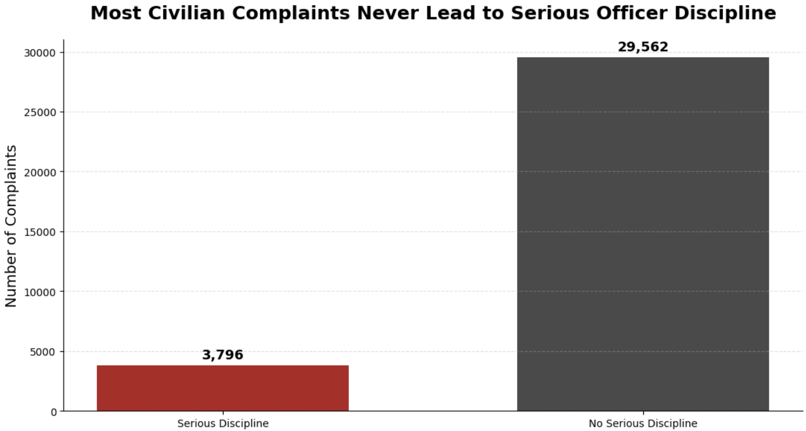
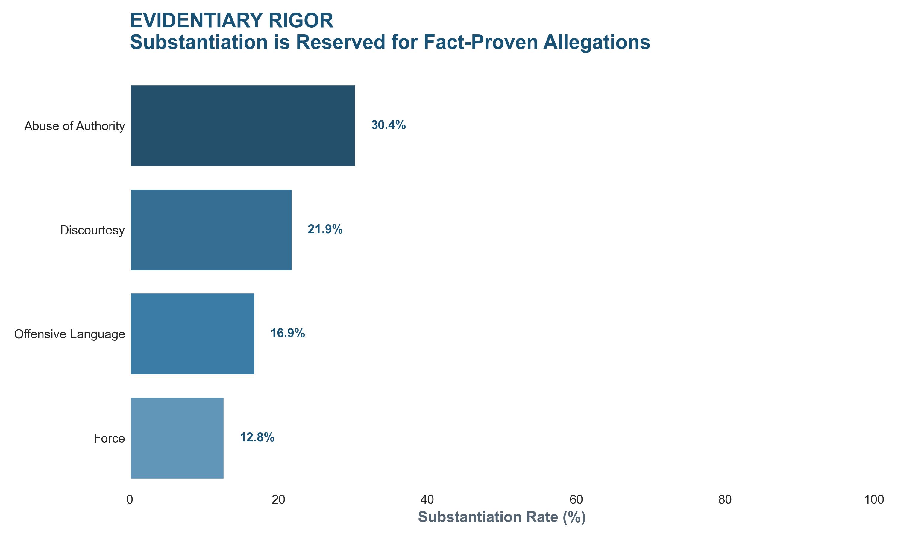

Proposition: The NYPD disciplinary system is corrupt: civilian complaints are filtered out and are not being taken seriously.
FOR the Proposition

Design Decisions and Rationale:
- Focused on the contrast between complaints filed and serious disciplinary action since large gap immediately supports the argument that civilian complaints are being filtered out before any meaningful consequences happen.
- Direct wording for the title frames the data emotionally and makes the viewer interpret the low discipline rate as evidence of institutional failure rather than as a neutral administrative outcome.
- Emphasized the count difference visually so the "No Serious Discipline" category dominates the graph, which makes the system appear unresponsive while minimizing the nuance that some complaints may be unsubstantiated or resolved through lighter forms of discipline.
AGAINST the Proposition

Design Decisions and Rationale:
- I made the X-axis a full scale because I thought it would be too simple to just limit the X or Y axis and the deception tatics would be too easy to spot.
- I purposely made the title "evidentiary rigor" because it frames the low substiantiation rates as one of due process where the investigation would really reveal what actually happens and if it is actually true. And in the times it was actually true there were actions being taken
- I puposely used the words substiantiation which means if there were enough proof and not the actual actions taken to punish these officers so that it might misguide readers to think the officers were actually punished when instead they could have gotten a slap on the wrist. I also used a very professional and cool color scheme to make it seem less bad.
Final Reflection
Working on these two visualizations showed us how much a design can shape the way a viewer interprets the same dataset. For the first visualization, it was straightforward to make the disciplinary system look ineffective because the raw difference between serious and non-serious discipline was already very large. A simple bar chart, a direct title, and the contrast between the two categories were enough to make the argument feel persuasive. For the second visualization, it was more difficult because we had to argue against the proposition without completely ignoring the fact that many complaints do not lead to serious punishment.
What surprised us most was that persuasive and deceptive design choices are not always easy to separate. Some choices, such as using a strong title or emphasizing one part of the data, can be acceptable if the visualization is still honest about what it is showing. However, other choices, such as using the word “substantiation” in a way that might make viewers assume officers were punished, can become misleading because the viewer may take away a stronger conclusion than the data actually supports. This made us realize that ethical visualization is not only about whether the numbers are correct, but also about whether the framing, labels, and design choices guide the viewer toward a fair interpretation.
We now define ethical analysis and visualization as the process of making an argument with data while still being transparent about uncertainty, limitations, and alternative explanations. In our view, an acceptable persuasive visualization highlights a real pattern in the data and uses design choices to make that pattern easier to understand. A misleading visualization goes further by hiding context, using loaded language, or encouraging viewers to confuse one measure for another. This project helped us see that even small decisions, such as titles, colors, axis choices, and category labels, can strongly affect whether a visualization feels informative or manipulative.